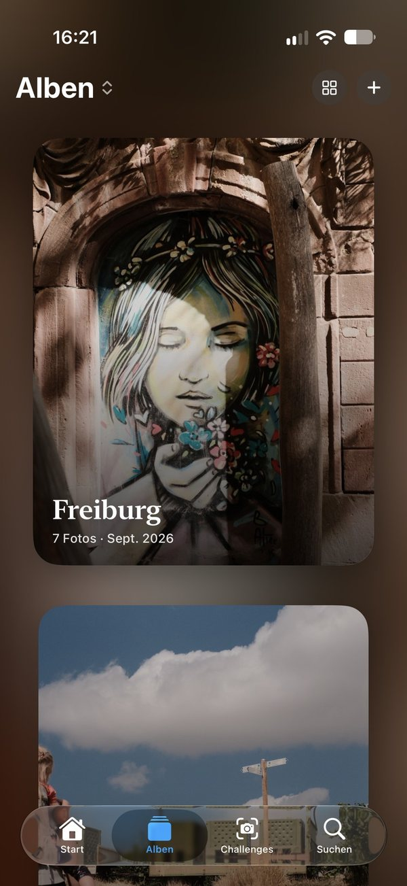
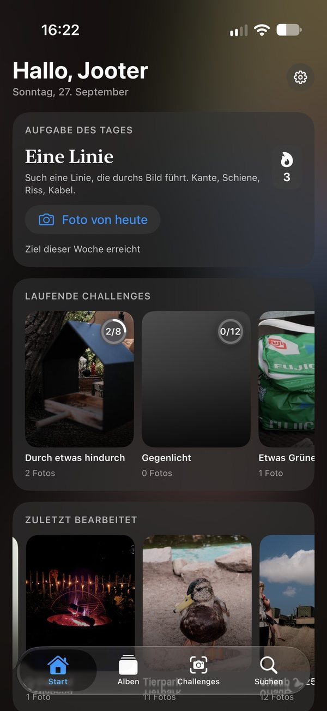
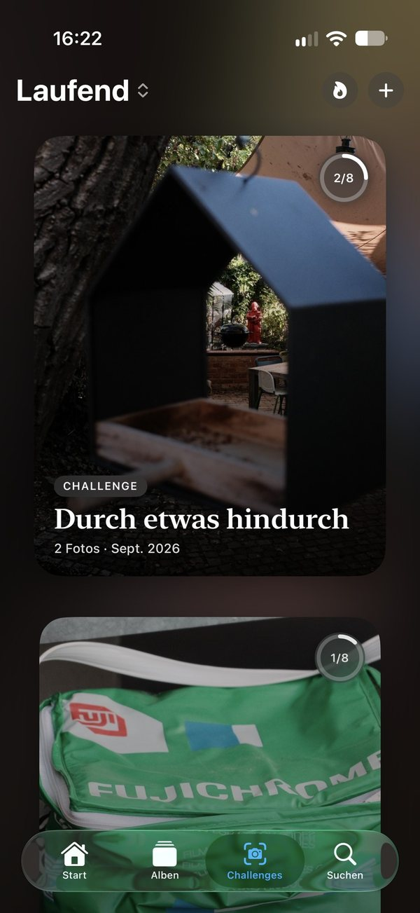

“Here are the photos from our holiday. Just don’t scroll too far!”
You know the moment. You hand someone your phone, and as they swipe through, you get nervous. After the sunset come forty shots of the same rock, then three screenshots of train times, and somewhere in between the one picture you’re genuinely proud of.
With Joot you pick the twenty pictures that tell the trip. You add the place and a few lines about why that evening was so good. Next time, you just hand over the phone.

Anyone who teaches you photography says the same thing
If you want to get better, take as many pictures as you can.
It isn’t the new camera that makes you better – it’s the hundredth picture. Joot gives you a reason every day: a small task, the same for everyone. It is chosen so it works even on a grey Tuesday in November, without a trip, in five minutes. A line, backlight, something round.
You set a weekly goal that fits your life. The flame counts weeks, not days. So a missed day is no drama, and a missed week only lets the flame glow.

Choosing is where you learn
In Joot, no AI picks your best picture. At the end of a challenge, you decide which one is your favourite. That’s where the important part happens: you ask yourself why this one. That’s how you develop an eye no camera can give you.

In December: your year in fifty pictures instead of five thousand
Over the year, your favorites and the best picture of each challenge go into your yearbook. At the end, what you have isn’t a folder full of shots – it’s your year.
What Joot isn’t
- Not a social network.No feed, no likes, no audience. You decide what was good.
- Not a storage service.Your photos stay in your library. Joot copies nothing and syncs only through your private iCloud.
- No subscription for this version.The Photo of the Day is always free. You try albums and challenges for 30 days, then unlock Joot once – and everything this version can do stays subscription-free for good.
A solo project that keeps growing
Joot is the project of a single hobby photographer, with no investors and no ads. It’s meant to keep growing. Future features may therefore come with a subscription – but what you unlocked once will never end up behind one.
Quick questions
Do I need a good camera?
No. Your iPhone is plenty. If you shoot with a camera, bring the pictures into your library and Joot takes them from there.
I don’t have much time.
That’s exactly what the Photo of the Day is for. Five minutes – and you decide on how many days a week.
What if I stop?
Your albums, challenges and yearbook stay as they are. The photos were never gone anyway.
Free via TestFlight. How Joot works in detail is explained in the Help.